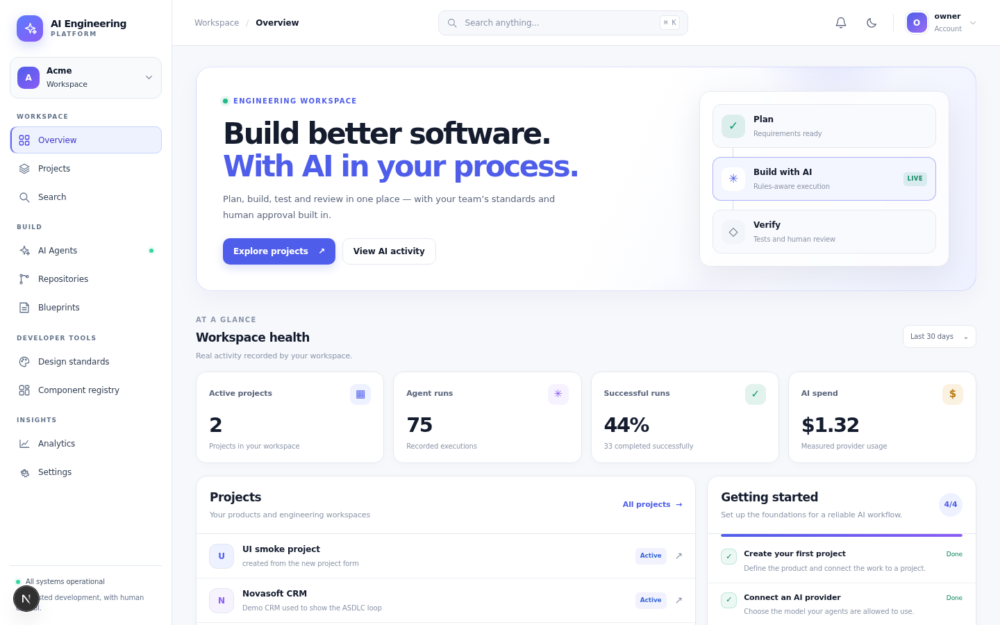

Overview
AI Engineering Platform is a workspace where AI agents execute the software lifecycle and people keep the decisions that matter.
A task moves through a defined path:
- Shape — a project blueprint creates the workspace; a task gets a description and acceptance criteria.
- Plan — the planning agent proposes steps, files and risks against a frozen context.
- Approve — a human approves the plan before code is written.
- Build — a development agent works in a disposable sandbox and produces a diff.
- Prove — tests, design checks and acceptance evidence are recorded.
- Review — a pull request is opened; a human approves the merge.
- Learn — delivery and quality metrics show what happened.
The platform does not hide these steps behind a chat box. Every transition is an event with an actor, an artifact and a timestamp.

The workspace: health, projects and the next setup step.
Who it is for
| Team | What they use it for |
|---|---|
| Product and platform teams | Repeatable delivery with approvals and an audit trail |
| Agencies and studios | One workspace per client, with project-level access |
| Regulated teams | Human gates, isolation and exportable audit evidence |
What you need
- A workspace (organisation) and a project.
- A Git provider connection: GitHub App, GitLab, or a token for local development.
- A model provider or a registered agent plugin.
- A sandbox runtime (Docker locally, Kubernetes for a cluster deployment).
Principles
- Plan before code. A task cannot start without a definition of ready.
- Sandbox everything. The agent cannot touch the host, the network or another run.
- Prove acceptance. The diff must carry evidence for every acceptance criterion.
- Humans merge. No agent merges its own pull request.
- Measure outcomes. Speed is reported next to rework, proof validity and escaped defects.
Where to go next
- Quickstart — run the platform locally and complete one task.
- Key concepts — the lifecycle, gates and roles.
- Tasks and board — how work is shaped.
- API reference — every REST endpoint.